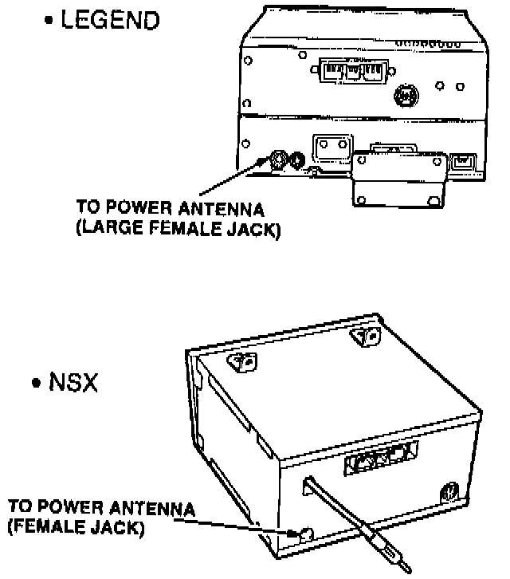
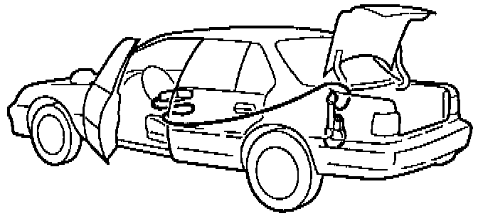
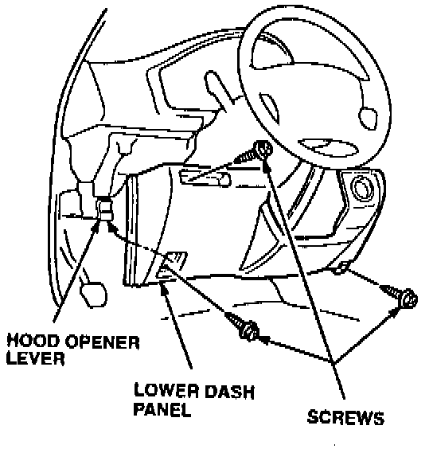
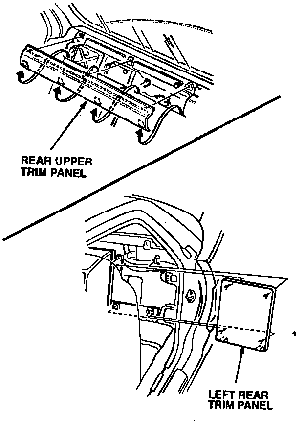
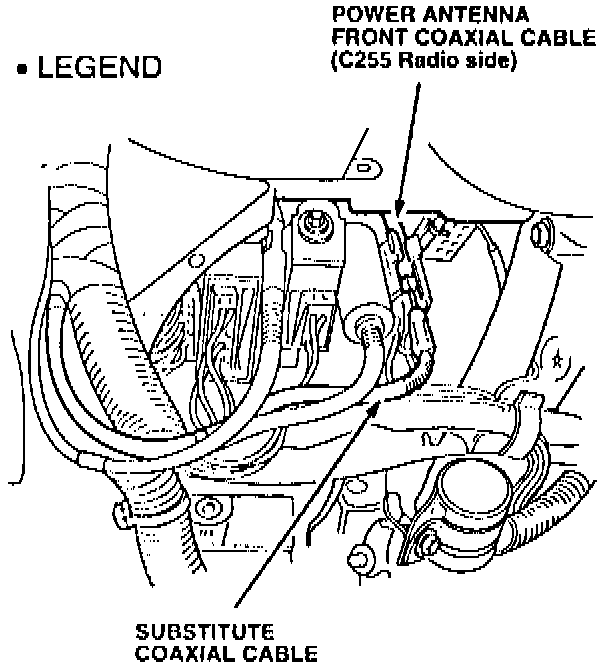
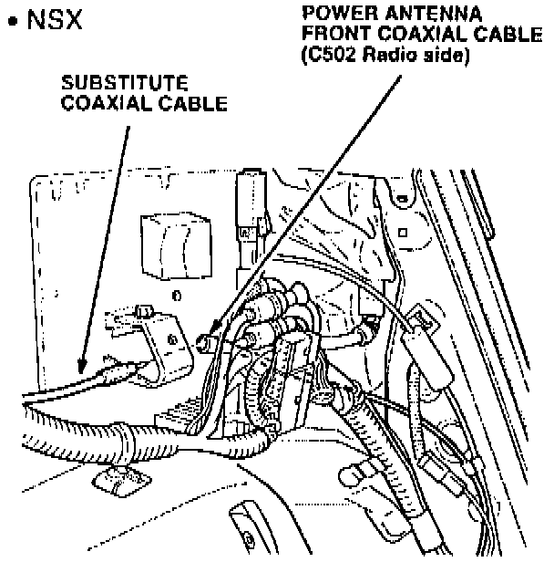

Power Antenna Coaxial Cable Test
1. Test drive the car to verify the customer's description of the symptom.^ If the symptom cannot be reproduced, contact the customer for more information regarding the symptom.
^ If the symptom can be reproduced, continue with step 2.

2. Disconnect the power antenna coaxial cable from the power antenna and from the radio.

3. Install a substitute coaxial cable (P/N 39159-SD4-A04) to the antenna; then run the substitute cable on the outside of the car, and connect it to the radio.
4. Test the radio.
^ If the symptom has gone away, go to step 5.
^ If the symptom persists, continue troubleshooting the audio system.
5. Disconnect the substitute coaxial cable from the radio; then reconnect the car's original power antenna front coaxial cable to the radio.
6. Remove the following items to access the coaxial cable connector. SRS components are located in this area. Review the SRS component locations, precautions, and procedures in the SRS section of the appropriate service manual before continuing.

^ LEGEND - Remove the lower dash panel; then locate the power antenna coaxial cable on the left side of the steering column.

^ NSX - Move the driver's seat forward, and remove the rear upper trim panel; then remove the left rear trim panel. Locate the power antenna coaxial cable.


7. Disconnect the power antenna coaxial cable connector; then connect the substitute coaxial cable to the power antenna front coaxial cable (radio side).
8. Test the radio.
^ If the symptom has gone away, replace the rear power antenna coaxial cable. Refer to PARTS INFORMATION.
^ If the symptom persists, replace the front power antenna coaxial cable. Refer to PARTS INFORMATION.